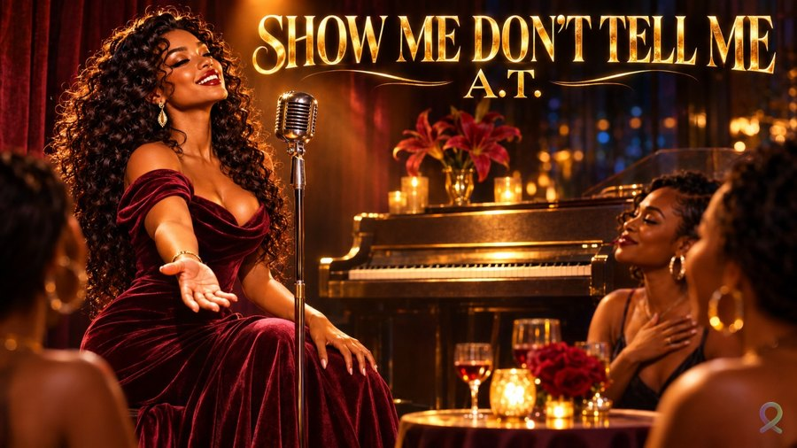

Track 06 · Heart On Pause
Show Me Don't Tell Me
Talk is cheap. You can't live on words. A.T. sings to every woman who has heard "I'm gonna" one too many times: don't tell me you love me while you're looking at the door. Put your money where your mouth is. Show me, and maybe I'll believe.
 Watch the official video
Watch the official video
Lyrics
[Intro]
Mmm... yeah
Ladies, y'all know what I'm talking about
Baby, I don't need the speech tonight
[Verse 1]
You said you'd call me by the evening, then the evening turned to three
You said you'd fix the little things, the leak, the light, the lock, the key
You got a pretty way with promise, every word is soft and sweet
But I'm standing in the same old kitchen on the same old broken street
And I been here before, I know the song, I know the dance
You give me poetry on Sunday, Monday I don't stand a chance
So don't you tell me that you love me while you're looking at the door
I need a little less "I'm gonna," baby, I need a little more
[Pre Chorus]
'Cause talk is cheap (talk is cheap)
And I can't live on words (no, no)
Ooh, I've heard it all before
So don't you tell me, baby
[Chorus]
Show me, don't tell me (show me)
I don't wanna hear it, baby, show me (ooh)
Put your money where your mouth is, then we'll see
Show me, don't tell me (show me)
Every woman listening knows the feeling (yeah)
Words are pretty but I need a love that's real
Show me, and maybe I'll believe (maybe I'll believe)
[Verse 2]
Girl, I know you heard it too: "I'm changing, give me time"
He's been changing since the summer and it's winter in your mind
You deserve somebody steady who don't need a round of applause
For doing what a man should do without a reason or a cause
I don't need the diamond and I don't need the fancy car
I need you there on Tuesday when I'm tired and it's hard
Love is not a lyric, love is not a line
Love is showing up, love is showing up on time
[Pre Chorus]
'Cause talk is cheap (talk is cheap)
And I can't live on words (no, no)
Ooh, I've heard it all before
So don't you tell me, baby
[Chorus]
Show me, don't tell me (show me)
I don't wanna hear it, baby, show me (ooh)
Put your money where your mouth is, then we'll see
Show me, don't tell me (show me)
Every woman listening knows the feeling (yeah)
Words are pretty but I need a love that's real
Show me, and maybe I'll believe (maybe I'll believe)
[Bridge]
Don't say it (don't say it)
Do it (do it)
Don't promise (no more)
Prove it (prove it)
I'm not asking for the moon and stars, ooh
Just show me who you are (show me who you are)
Show me, show me, show me, ooh
[Final Chorus]
Show me, don't tell me (show me)
I don't wanna hear it, baby, show me (ooh)
Put your money where your mouth is, then we'll see
Show me, don't tell me (show me)
Every woman listening knows the feeling (yeah)
Words are pretty but I need a love that's real
Show me, and maybe I'll believe (maybe I'll believe)
[Outro]
Mmm, show me
Don't tell me... show me
Yeah
Written by Grey Beard and A.T. ℗ & © 2026 Threadia AI, Inc. All rights reserved.